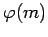

Inhalt Index DeskTop Bronstein

 Algebra und Diskrete Mathematik Elementare Zahlentheorie Kongruenzen und Restklassen
Algebra und Diskrete Mathematik Elementare Zahlentheorie Kongruenzen und Restklassen


Eine prime Restklasse [a]m wird primitive Restklasse genannt, wenn sie in der primen Restklassengruppe modulo m die Ordnung  hat.
| Beispiel A |
|
[2]5 ist eine primitive Restklasse modulo 5, denn |
| Beispiel B |
|
Es gibt keine primitive Restklasse modulo 8, denn [1]8 hat die Ordnung 1, und haben in der primitiven Restklassengruppe die Ordnung 2. |
Hinweis: Es existiert genau dann eine primitive Restklasse modulo m, wenn m=2, m=4, m=pk oder m=2pk gilt, wobei p eine ungerade Primzahl und k eine natürliche Zahl ist.
Existiert eine primitive Restklasse modulo dann ist die prime Restklassengruppe modulo m eine zyklische Gruppe.